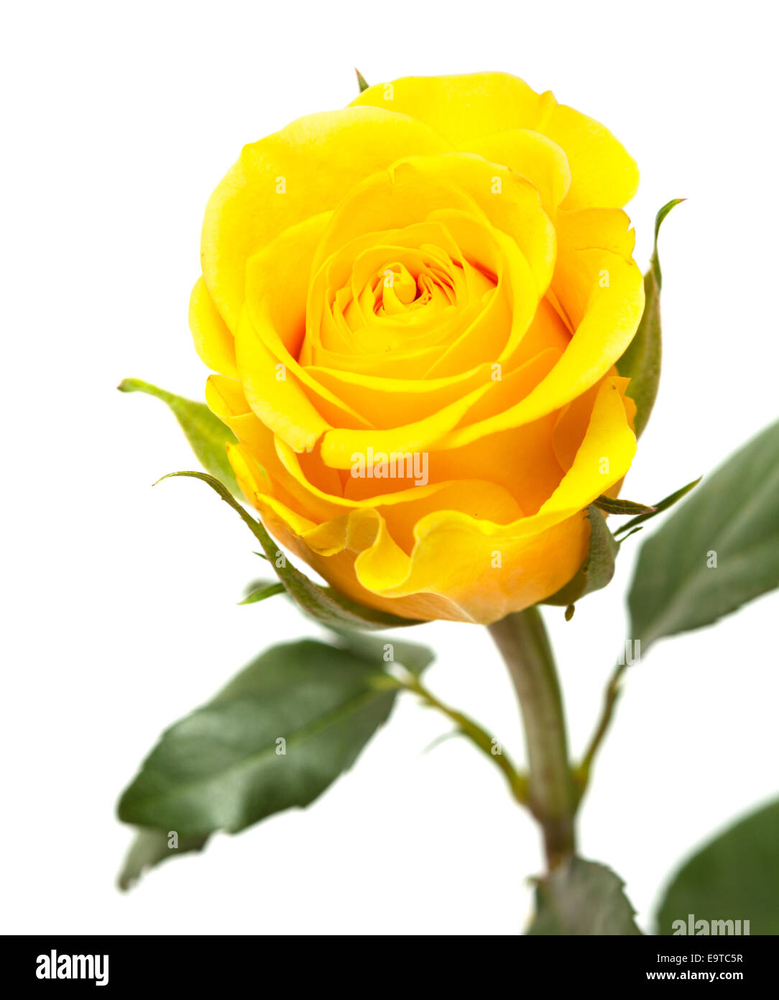

Nimeni nu poate explica de ce a aparut asa ceva in marea trandafirie, dar frumusetea lui era atat de mare ca oricum nu si-au batut prea mult capul, sa afle adevarul. Habar nu avea cat de frumos era, caci nimeni nu exclama in preajma lui mai mult decat vai! Intr-o zi, in locul despre care va povestesc, au poposit si cativa fluturi. N-aveau deloc o reputatie frumoasa: luasera la rand toate gradinile de prin partea locului. Dintre toti inaripatii, cel mai colorat s-a indreptat glont spre trandafirul galben si un milimetru daca mai indraznea sa se apropie i-ar fi sorbit nectarul dintr-o suflare. Cu un nod in… gat sa-i spunem, bobocul a apucat sa-l implore sa-l mai pasuiasca putin, caci abia de o zi inflorise. L-au impresionat pe fluture, cum nu, suspinele florii, asa ca, dupa ce si-a potolit poftele in vecini, s-a intors la noul sau prieten, cu gandul sa afle totul despre el. Si a doua zi, ba chiar si in a treia, caci bobocul continua sa fie regele gradinii, cei doi pareau nedezlipiti. Ba povesteau, ba picoteau in bataia soarelui, ba mai pleca fluturele sa manance prin vecini… desertul i-l servea bobocul galben, putin din nectarul sau, doar cat sa stie fluturele cat de dulce e el, nu mai mult, altfel s-ar fi ofilit imediat! N-a trecut mult timp si, dupa cum ii era obiceiul, roiul de fluturi a aflat despre o alta gradina, culmea! mult mai parfumata. Cu totii si-au luat zborul, cu tot cu amicul bobocului galben. Despartirea a fost scurta si floarea era convinsa ca prietenia nascuta in acea vara va dura pentru totdeauna. Ba mai mult, fluturele i-a promis ca o sa treaca in fiecare zi in vizita, chiar daca nu va putea zabovi prea mult! Si, daca trandafirul abia isi putea stapani lacrimile in fiecare seara in care isi dadea seama ca nici in acea zi prietenul lui n-a venit sa-l vada, fluturele nostru isi facuse prieteni peste tot unde mergea cu marea sa familie. Evident, tuturor le spunea ca el nu e genul care sa zboare din floare in floare. Toate lacrimile trandafirului l-au secat, pana la urma. Petalele bobocului frumos de odinioara cadeau una cate una, spre spaima unui alt fluture care auzise de faimoasa prietenie din gradina de neuitat. A stat langa ce mai ramasese din frumoasa floare si nu dulceata nectarului demult secat l-a atras, ci duiosia cu care trandafirul ii povestea de vremurile bune. Puternicul soare ale unei dupa-amieze fierbinti a secat si ultima picatura de viata din galbenul trandafir. L-a jelit doar noul fluture, dar si paznicul ori oamenii care veneau sa viziteze gradina i-au simtit lipsa. Nimeni nu stie daca prietenul ei a mai trecut pe acolo, in amintirea dulcilor clipe de odinioara. De atunci, oamenii isi amintesc cu drag despre prietenia dintre un fluture ca oricare altii si un trandafir galben dintr-o mare de flori rozalii. Trandafirul galben, de altfel, e simbolul prieteniei adevarate. Aceea in care exista compasiune, sprijin si iubire.
Du-te pe pagina 1 Du-te pe link exterior 